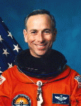

Lyndon B. Johnson Space Center
Houston, Texas 77058
|
National Aeronautics and Space Administration Lyndon B. Johnson Space Center Houston, Texas 77058 |
 |
Biographical Data |
||
Carl J. Meade (Colonel, USAF)
NASA Astronaut
PERSONAL DATA: Born November 16, 1950, at Chanute Air Force Base, Illinois. Single. One son. He enjoys woodworking, home-built aircraft construction, racquetball, jogging, and snow skiing. His father, Mr. John Meade, resides in Universal City, Texas. His mother, Mrs. Esther J. Meade, is deceased.
EDUCATION: Graduated from Randolph High School, Randolph Air Force Base, Texas, in 1968; received a bachelor of science degree (with honors) in electronics engineering from the University of Texas in 1973, and a master of science degree in electronics engineering from California Institute of Technology in 1975.
ORGANIZATIONS: Member of the Society of Experimental Test Pilots (SETP), Tau Beta Pi, Eta Kappa Nu, Phi Kappa Phi, the Experimental Aircraft Association, and is a registered professional engineer.
SPECIAL HONORS: Hughes Fellow, California Institute of Technology. Distinguished graduate of both USAF Undergraduate Pilot Training and USAF Test Pilot School. Recipient of the Liethen-Tittle Award as the Outstanding Test Pilot of USAF Test Pilot School Class 80B. Awarded the Distinguished Flying Cross, Intelligence Medal. National Defense Service Medal, Air Force Commendation Medal, Defense Superior Service Medal, 2 Air Force Outstanding Unit Awards, NASA Group Achievement Award, NASA Space Flight Medal, and NASA Exceptional Service Medal.
EXPERIENCE: Prior to entering active duty in the United States Air Force, Meade was a Hughes Fellow at the California Institute of Technology and an electronics design engineer at Hughes Aircraft Company in Culver City, California. He entered the U.S. Air Force at Laughlin Air Force Base, Texas, where he was a distinguished graduate of undergraduate pilot training. In 1977, Meade was assigned to the 363rd Tactical Reconnaissance Wing at Shaw Air Force Base, South Carolina, where he flew the RF-4C. He was then selected as a member of the USAF Test Pilot School Class 80B. Upon graduation he received the Liethen-Tittle Award as the Outstanding Test Pilot and was assigned to the 6510th Test Wing at Edwards Air Force Base, California. While there, Meade was involved with research development test and evaluation of the F-5E, RF-5E and F-20 aircraft and the ground-launched and air-launched cruise missiles. He also performed high speed taxi, braking, tailhook, takeoff, landing, flying qualities, performance and weapon systems tests in the F-4E aircraft. Meade was then assigned to the F-16 Combined Test Force where he flew performance, loads and flutter, flying qualities, and weapon systems tests in both the F-16A and F-16C aircraft. In 1985, he was reassigned to the USAF Test Pilot School as a test pilot instructor in the F-4, A-7, A-37, and various gliders, teaching performance, stability/control, departure/spins, and radar flight test techniques. He was also the departure/spin lead instructor and avionics systems test training aircraft program manager.
He has logged over 4,800 hours of jet time in 27 different aircraft.
NASA EXPERIENCE:Selected by NASA in June 1985, Meade became an astronaut in July 1986. He has held a variety of technical assignments including verification testing of flight software in the Shuttle Avionics Integration Laboratory (SAIL), crew escape flight tests, Orbiter ground egress tests and launch support duties, both at the Kennedy Space Center and at the Vandenberg Launch Site. Prior to STS-38 and after STS-50, Meade was the Astronaut Office representative to the Solid Rocket Booster Program and the Space Shuttle Main Engine Program at the Marshall Space Flight Center. He also served as a spacecraft communicator (CAPCOM) in Mission Control and the lead astronaut for Rendezvous and Docking Operations during the two years following STS-50.
A veteran of three space flights, Meade has logged over 712 hours in space. He served as a mission specialist on STS-38 in 1990, STS-50 in 1992, and STS-64 in 1994.
STS-38 launched at night from the Kennedy Space Center, Florida, on November 15, 1990. Meade conducted Department of Defense operations during this five-day flight which concluded after 80 orbits of the Earth in 117 hours, 54 minutes, 28 seconds. In the first Shuttle recovery in Florida since 1985, Space Shuttle Atlantis and her five-man crew landed back at the Kennedy Space Center on November 20, 1990.
STS-50, carrying the first United States Microgravity Laboratory (USML), launched from the Kennedy Space Center, Florida, on June 25, 1992. USML is a series of Spacelab flights dedicated to basic scientific research in the fields of fluid physics, combustion science, solid state physics, and biotechnology. This flight was also the first to utilize the Extended Duration Orbiter capabilities of the newly modified Orbiter Columbia. Mission duration was 331 hours, 30 minutes, 4 seconds. After 221 orbits of the Earth, the crew of Columbia landed at the Kennedy Space Center on July 9, 1992, thus ending the longest flight in the history of the Space Shuttle Program.
Most recently, Meade flew on STS-64 (September 9-20, 1994) aboard the Space Shuttle Discovery. The mission highlight occurred when Meade performed the first untethered spacewalk in 10 years. The objective was to flight test a self-rescue jetpack. Meade logged 6.9 hours outside Discovery and 3.6 hours piloting the jetpack. Other activities included the first use of lasers for environmental research, deployment and retrieval of a solar science satellite, and the performance of plume characterization studies of the reaction control thruster exhaust. Mission duration was 10 days, 22 hours, 51 minutes.
Meade has served as the Deputy Division Chief of the Crew and Thermal Systems Division and as the Chief of the Flight Support Branch of the Astronaut Office. In March 1996, Meade left NASA and the military to join the Lockheed Skunk Works as the Deputy Project Manager for the X-33 vehicle.
MARCH 1996
{kind=link}